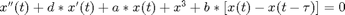
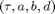

DDE-BIFTOOL Minimal demo for continuation of local bifurcations of periodic orbits
(c) DDE-BIFTOOL v. 3.1.1(86), 07/01/2015
This demo illustrates how to track local bifurcations of periodic orbits in DDEs with contant delay, using the extension ddebiftool_extra_psol and the auxiliary functions in ddebiftool_utilities. The example is the Duffing oscillator with delayed feedback discussed in the large-delay limit by Yanchuk & Perlikowski in (PRE79,0462211,2009):

The parameters are  (used in this order in the parameter vector).
Contents
Define path and system
First we load the folder of DDE-Biftool and its extensions into the Matlab path, and define the right-hand side and the delays. We create the structure containing the user-defined functions using set_funcs. We define the right-hand side such that it ca nbe called in vectorized form.
clear close all addpath('../../ddebiftool',... '../../ddebiftool_extra_psol',... '../../ddebiftool_extra_nmfm/',... '../../ddebiftool_utilities'); indtau=1; indb=3; funcs=set_funcs(... 'sys_rhs',@(x,p)[... x(2,1,:);... -p(4)*x(2,1,:)-p(2)*x(1,1,:)-x(1,1,:).^3-p(indb)*(x(1,1,:)-x(1,2,:))],... 'sys_tau',@()indtau,'x_vectorized',true);
First step: continuation of equilibria, Hopf bifurcations and periodic orbits,
see minimal_demo_stst_psol.html, final results in minimal_demo_plot_2dbif.html.
save('minimal_demo_funcs_results.mat')